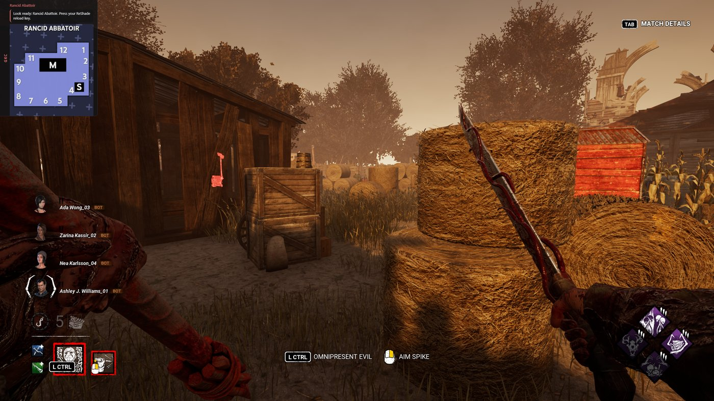
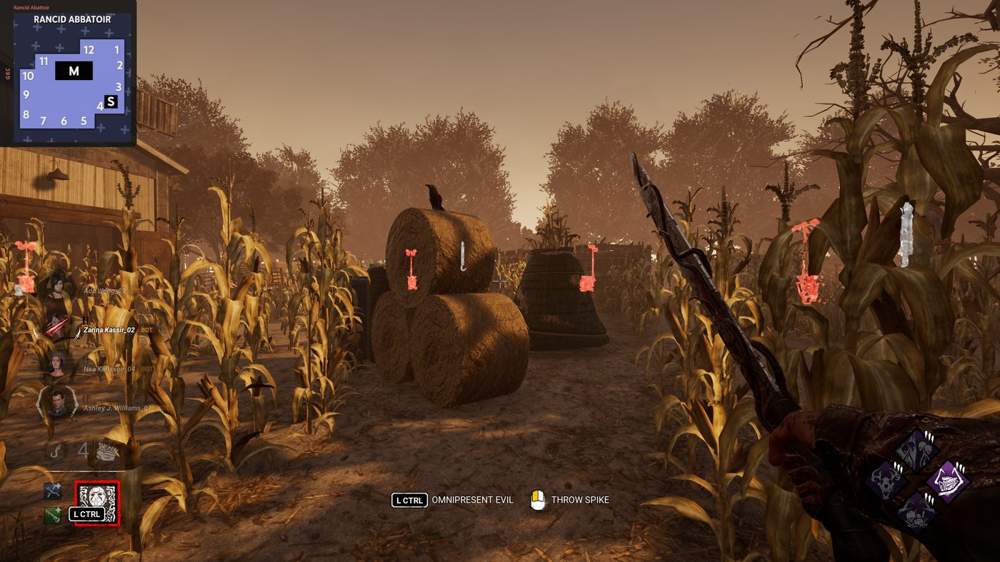
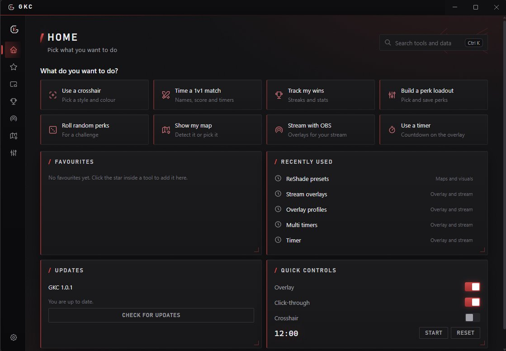

See it



What it does
Map overlayCall-out layouts of the current map on top of the game. Detected for you or picked by
hand. Movable, resizable, click-through.
ReShade presets per mapPick a ReShade look for each map and GKC switches to it when the map changes. You
press ReShade's own reload key.
1v1 timerNames, score and timers for 1v1 matches, with different looks.
And moreStreak tracker, crosshair, timers, perk and killer randomizers, build creator, stream
overlays for OBS, backup.
Install
- Open the latest release and download gkc-…-setup.exe.
- Run it. Windows may show "Windows protected your PC" because the app is not code-signed yet. Click More info, then Run anyway.
- Start GKC from the desktop shortcut. New versions are offered inside the app.
Tip: fullscreen games usually need borderless windowed mode for any overlay to be visible.
What GKC does and does not do
- It does not read the game's memory, inject code, press keys or move your mouse.
- The map is read from a screenshot of your main screen. Hotkeys use the normal Windows shortcut system.
- Your settings stay on your own PC. GKC only goes online to look for updates on GitHub, to download map text data once, and when you choose to send an idea.
- No ads and no accounts.